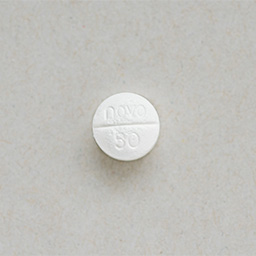

Prednisone, Prednisolone, Methylprednisolone
Prednisone is available as an oral tablet.
PrednisolONE is available as an oral liquid.
Methylprednisone is available as an injection administered into the veins.
- Prednisone capsules:
- 
What is this medication for?
Prednisone, prednisolONE and methylprednisolone are also referred to as corticosteroids or “steroids”. These “steroids” are different from the type used by some athletes. They are used for their anti-inflammatory and immunosuppressive effects. They lower your immune system and prevent rejection. They can also treat mild acute rejection when given in high doses.
How should I take this medication?
Always take prednisone and prednisolONE with food or milk to prevent stomach upset.
If you take prednisone and prednisolONE just once a day, take your dose in the morning with breakfast. This mimics your body’s natural rhythm of steroid production.
Methylprednisolone is an injectable medication routinely given in large doses during your transplant operation and in the first few days following surgery to prevent rejection.
You may be started on high doses of prednisone, prednisolONE or methylprednisolone in case of acute rejection. The dose will be decreased gradually to the smallest effective dose, but you may need to continue this small dose indefinitely.
What are some possible side effects of this medication?
NOTE: Majority of the side effects only appear when prednisone, prednisolONE or methylprednisolone is taken at high doses for a long period of time. When taken for short periods of time or at really low doses, most side effects are rare.